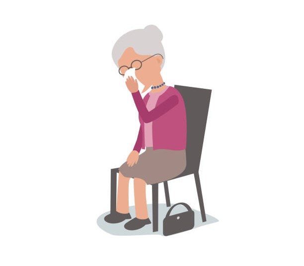
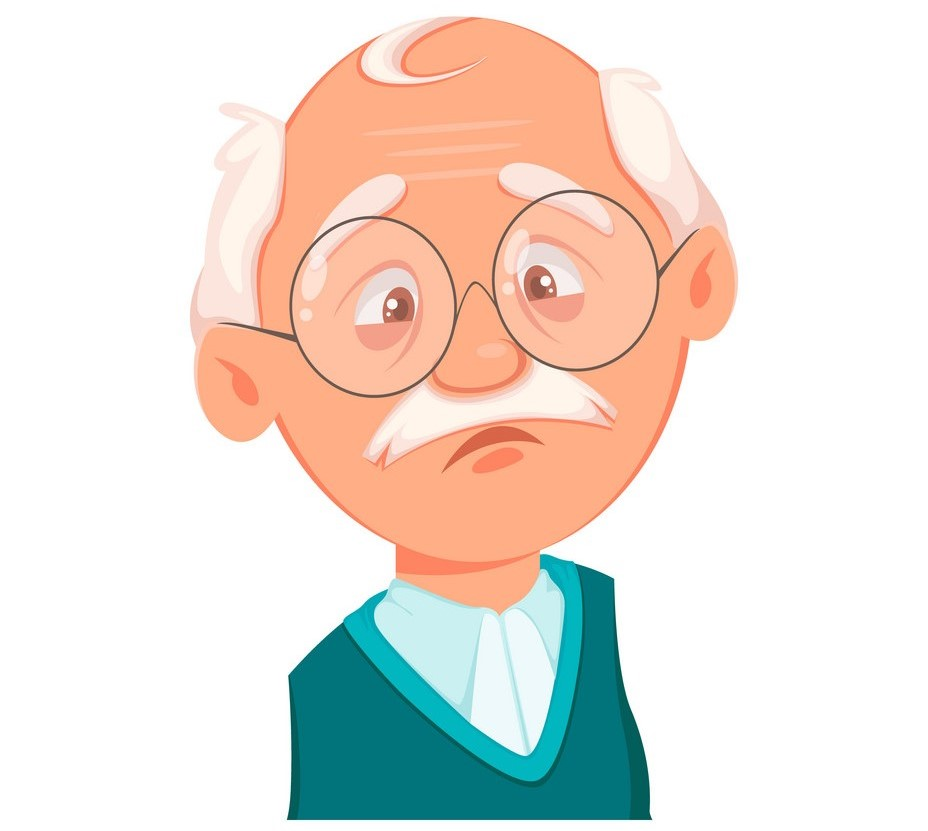

Mental health of older adults
Risk factors for mental health problems among older adults
There may be multiple risk factors for mental health problems at any point in life. Older people may experience life stressors common to all people, but also stressors that are more common in later life, like a significant ongoing loss in capacities and a decline in functional ability. For example, older adults may experience reduced mobility, chronic pain, frailty or other health problems, for which they require some form of long-term care. In addition, older people are more likely to experience events such as bereavement, or a drop in socioeconomic status with retirement. All of these stressors can result in isolation, loneliness or psychological distress in older people, for which they may require long-term care.

Mental health has an impact on physical health and vice versa. For example, older adults with physical health conditions such as heart disease have higher rates of depression than those who are healthy. Additionally, untreated depression in an older a person with heart disease can negatively affect its outcome.

Older adults are also vulnerable to elder abuse - including physical, verbal, psychological, financial and sexual abuse; abandonment; neglect; and serious losses of dignity and respect. Current evidence suggests that 1 in 6 older people experience elder abuse. Elder abuse can lead not only to physical injuries, but also to serious, sometimes long-lasting psychological consequences, including depression and anxiety.
Treatment and care strategies to address mental health needs of older people
It is important to prepare health providers and societies to meet the specific needs of older populations, including:
- training for health professionals in providing care for older people;
- preventing and managing age-associated chronic diseases including mental, neurological and substance use disorders;
- designing sustainable policies on long-term and palliative care; and
- developing age-friendly services and settings.
Health promotion
The mental health of older adults can be improved through promoting Active and Healthy Ageing. Mental health-specific health promotion for older adults involves creating living conditions and environments that support wellbeing and allow people to lead a healthy life.
- providing security and freedom;
- adequate housing through supportive housing policy;
- social support for older people and their caregivers;
- health and social programmes targeted at vulnerable groups such as those who live alone and rural populations or who suffer from a chronic or relapsing mental or physical illness;
- programmes to prevent and deal with elder abuse; and
- community development programmes.
Promoting mental health depends largely on strategies to ensure that older people have the necessary resources to meet their needs, such as: